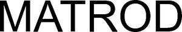

Trade Mark Journal No.2025/032 8 August 2025
WO0000001866470 (5,25,28,29,30,31,32,35,41)
Office of origin: Switzerland
Date of International Registration:10 April 2025
Date of designation in the UK:
10 April 2025

International priority date claimed: 30 October 2024
(Switzerland)
(822298)
- Class 5
- Pharmaceutical products; food supplements; dietetic food supplements; dietetic food supplements and dietetic substances for medical use; vitamin and mineral food supplements; dietetic food supplements; plant and herb extracts, other than essential oils, for pharmaceutical use; pills for pharmaceutical use; beverages used as dietary supplements; beverages for medical use; beverages enriched with nutritional elements for medical use; nutritional supplement mixtures for beverages in the form of powders; dietetic powders or beverages for medical use, used as meal replacements; protein food supplements.
- Class 25
- Clothing; underwear; headwear; belts (clothing); hosiery; hats; bandanas (neckerchiefs); headbands [clothing]; socks; shoes; sports shoes; tights; suits; lingerie articles; stockings; gloves (clothing); pocket squares; face masks (fashion clothing); pajamas.
- Class 28
- Gymnastic and sports articles (except for articles included in other classes); exercise equipment, namely, machines, pull-up bars, benches, trampolines, extension handles, chest expanders, abdominal boards, rowing machines, weights, bars, stretch bands, pulleys, weighted training gloves, stands for pumps, body-building racks in the nature of exercise platforms, exercise balls, medicine balls, yoga blocks; appliances for gymnastics and bodybuilding.
- Class 29
- Nut-based snack foods; nut butter; processed nuts; processed almonds; dry fruits; dried meat; milk, cheese, butter, yogurt and other dairy products; canned fish and meat; prepared dishes consisting primarily of meat, fish, poultry or vegetables; meat, fish, poultry and game; processed meat products; cooked dishes based on vegetables, potatoes, fruits, meat, poultry, fish and seafood products; jellies, jams, compotes; fish, not live; spiced oils; eggs; preserved vegetables; smoked seafood; processed fish products for human consumption; chips; ham; charcuterie; beverages based on almond milk, peanuts, coconut and nuts.
- Class 30
- Oat flakes; dried cereal flakes; cereal-based preparations; cereal bars; high-protein cereal bars; processed herbs; bread, pastry and confectionery; rice, pasta and noodles; food seasonings; coffee, tea, cocoa and substitutes thereof; beverages based on coffee, tea or cocoa.
- Class 31
- Unprocessed whole-grain cereals; Unprocessed raw grains and seeds; unprocessed nuts; vegetable and fruit seeds; fresh fruits and vegetables; unprocessed and non-transformed agricultural, aquacultural, horticultural and forestry products.
- Class 32
- Protein-enriched sports beverages; sports beverages; isotonic beverages; energy drinks; non-alcoholic preparations for making beverages; beverages not containing alcohol.
- Class 35
- Retail or wholesale services for food products and beverages; retail services, including online, for pharmaceuticals, food supplements, dietary food supplements, dietary food supplements and dietetic substances for medical use, vitamin and mineral-enriched food supplements, dietary food supplements, plant and herb extracts, other than essential oils, for pharmaceutical use, pills for pharmaceutical use, beverages used as dietary supplements, beverages for medical use, nutritionally fortified beverages for medical use, nutritional supplement mixtures for beverages in the nature of powders, dietetic powders or beverages for medical use, used as meal replacements, protein food supplements, clothing, underwear, headwear, belts [apparel], hosiery, hats, bandanas [scarves], headbands [apparel], socks, shoes, sports shoes, tights, suits, lingerie, stockings, gloves [apparel], pocket squares [apparel], face masks [fashion clothing], pajamas, gymnastic and sports articles [except for articles not included in other classes], exercise equipment, namely machines, pull-up bars, benches, trampolines, extension handles, chest expanders, abdominal boards, rowing machines, weights, bars, stretch bands, pulleys, weighted training gloves, stands for pumps, bodybuilding supports in the nature of exercise platforms, exercise balls, medicine balls, yoga blocks, appliances for gymnastics and bodybuilding, nut-based snack foods, nut butter, processed nuts, processed almonds, dried fruits, dried meat, milk, cheese, butter, yogurt and other dairy products, canned fish and meat, prepared meals consisting primarily of meat, fish, poultry or vegetables, meat, fish, poultry and game, processed meat products, cooked dishes based on vegetables, potatoes, fruits, meat, poultry, fish and foodstuffs coming from the sea, jellies, jams, compotes, fish, not live, spiced oils, eggs, preserved vegetables, smoked seafood, processed fish products for human consumption, chips, hams, charcuterie, beverages based on almond milk, peanuts, coconut and nuts, oat flakes, dried cereal flakes, preparations made from cereals, cereal bars, high-protein cereal bars, processed herbs, bread, pastries and confectionery, rice, pasta and noodles, food seasonings, coffee, tea, cocoa and substitutes therefor, beverages based on coffee, tea or cocoa, unprocessed whole-grain cereals, unprocessed raw grains and seeds, unprocessed nuts, fruit and vegetable seeds, fresh fruits and vegetables, raw and unprocessed agricultural, aquacultural, horticultural and forestry products, protein drinks for athletes, sports drinks, isotonic drinks, energy drinks, preparations not containing alcohol for making beverages, beverages not containing alcohol.
- Class 41
- Educational and training services relating to sports; sports tuition; sports training services; organization and conducting of sporting events; preparing and conducting sporting activities; sports entertainment services; publishing printed materials in the field of sports, other than advertising texts; online electronic publishing of books, newspapers and magazines, other than advertising texts.
Matthias Rodriguez
Representative: BUGNION SA, Route de Florissant 10, CH-1206 Genève, SWITZERLAND